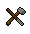

")
Falador
Easy Tasks
Task |
Quests Started / Required |
Skill / Other Requirements |
|
Buy a Farming amulet from Sarah on the farm north of Port Sarim |
None | None | |
Buy a stat-boosting beer from a waitress in the Rising Sun tavern |
None | None | |
Buy a black chainbody from Wayne's Chains, and try it on in the shop |
None | 10 |
|
Climb to the top of the White Knights' Castle |
None | None | |
Discover your family crest from Sir Renitee |
None | 16 |
|
Enter the mole’s lair under Falador Park |
None | None | |
Feed Ridgeley, the hairdresser’s pet |
None | None | |
Fill a bucket from the pump north of the west Falador bank |
None | None | |
Heal an elemental wizard by casting an appropriate elemental spell on him (air, water, earth, fire) |
None | None | |
Kill a duck in Falador Park |
None | None | |
Kill a highwayman on the road south of Falador |
None | None | |
Make a mind tiara |
None | None | |
Talk to Party Pete in the Party Room |
None | None | |
Recharge your Prayer points at the altar south-west of Port Sarim |
None | None | |
Take the boat to Entrana |
None | None |
Click the box below to see the rewards for completing the easy tasks:
Warning: Spoilers Below To view the spoiler, highlight the box below with your cursor to see the text hidden insideShow spoiler...
| Falador shield | When worn: Operate shield to restore up to 25% of your Prayer points once per day Operate when worn to perform a new emote Experience lamp - 1,000 experience in the skill of your choice |
Medium Tasks
Task |
Quests Started / Required |
Skill / Other Requirements | |
Craft a fruit basket using the loom at the farm north of Port Sarim |
None | 36  | |
Crawl under Falador’s south wall |
None | 26 |
|
Grapple up, and then jump off the north Falador wall |
None | 11 19 37 |
|
Increase your reputation with the White Knights by killing a black knight |
Wanted! | None | |
Kill an ice giant in the Asgarnian Ice Dungeon |
None | None | |
Light a bullseye lantern in the chemist’s |
None | 49 |
|
Pickpocket a Falador guard |
None | 40 |
|
Place a scarecrow to protect your sweetcorn as it grows in the patch north of Port Sarim |
None | 23 |
|
Salute Sir Tiffy while wearing full initiate armour |
Recruitment Drive | 20 10 |
|
Smith some blurite crossbow limbs on Thurgo’s anvil |
The Knight's Sword | 10 13 |
|
Travel from Port Sarim to Musa Point for free (with a little help from Charos) |
Garden of Tranquillity | None | |
Visit the Port Sarim rat pits. |
Rat Catchers | None |
Click the box below to see the rewards for completing the medium tasks:
Warning: Spoilers Below To view the spoiler, highlight the box below with your cursor to see the text hidden insideShow spoiler...
| Upgraded Falador shield | In addition to the easy tasks' reward, when worn: Operate shield to restore up to 50% of your Prayer points once per day 10% increase in experience when using the Farming patches north of Port Sarim Experience lamp - 5,000 experience in the skill of your choice |
Hard Tasks
Task |
Quests Started / Required |
Skill / Other Requirements |
|
Ascend the Dark Wizards' Tower while wearing full proselyte armour |
Slug Menace | 30 20 |
|
Change your family crest to the Saradomin symbol |
None | 70 16 |
|
Craft 140 or more mind runes simultaneously |
Rune Mysteries | 56 |
|
Cut down a yew or magic tree that you grew in Falador Park |
None | 60 60 |
|
Dial to the fairy ring on Mudskipper Point |
A Fairy Tale Part II - Cure a Queen | None | |
Dye a cape pink with dye from Betty in Port Sarim |
Hand in the Sand | None | |
Enter the Mining Guild |
None | 60 |
|
Kill a mogre at Mudskipper Point |
None | 32 |
|
Kill a skeletal wyvern in the Asgarnian Ice Dungeon |
The Elemental Workshop I recommended | 72 |
|
Summon an ibis in the Port Sarim fish store |
None | 56 |
Click the box below to see the rewards for completing the hard tasks:
Warning: Spoilers Below To view the spoiler, highlight the box below with your cursor to see the text hidden insideShow spoiler...
| Upgraded Falador shield | In addition to the easy and medium tasks' reward, when worn: Operate shield to restore all of your Prayer points once per day Access white lily seeds by trading mole skins with Wyson Experience lamp - 10,000 experience in the skill of your choice |
For more information about Falador and the surrounding areas, please see the Area Guides.

More articles in
Achievement Diary
|
|
|
Further Help
If this article does not help you, you may find the following sections of the RuneScape site helpful:
|
|